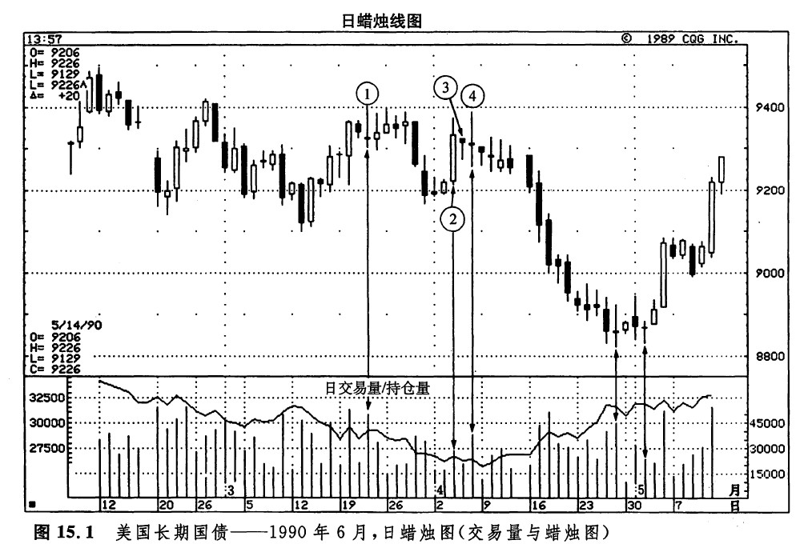
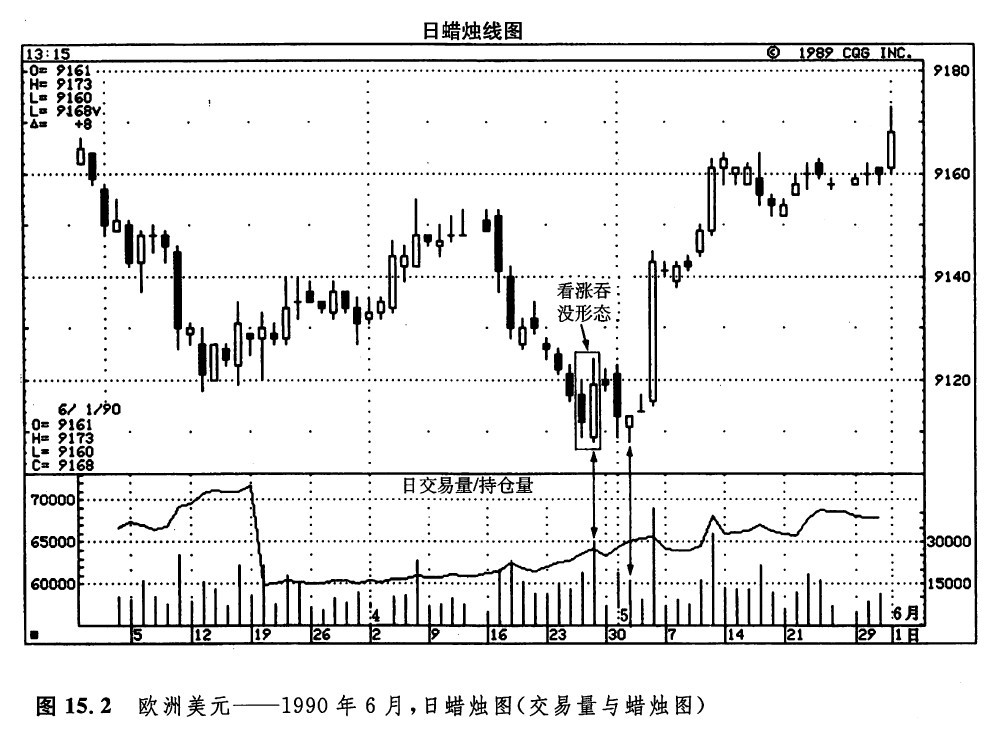

如图15.1所示，将交易量与蜡烛图技术结合起来，有助于确认双重顶形态或双重底形态的形成。3月22日（即蜡烛线①），市场向上推进至2月底的高点的水平（在94美元附近）。蜡烛线①这一天的交易量为504000张合约（本章所列举的所有的交易量数据都是该品种所有合约月份的交易量的总和）。在接下来的几天中，市场曾经力图将价格推升到94美元的水平之上。但是，这些交易日的实体都比较小，反映出牛方的激情已经不足。在这些小蜡烛线处，较低的交易量也为上述看法提供了佐证。一周以后，牛方终于举手投降。3月下旬，市场在2个交易日之内下跌了两个整点。

下面，我们把注意力转向4月4日的高高的白色蜡烛线（蜡烛线②）。这根坚挺的蜡烛线是否预示着牛方已经重新聚积起力量了呢？答案很可能是否定的。首先我们注意到，这个上涨交易日的交易量相对来说是较轻的，仅有300000张合约。在此之前数日，有两根长长的黑色蜡烛线（即3月29日和30日），反而具有较大的交易量。其次，在蜡烛线②之后的价格变化中，还出现了其他的不良征兆。它的下一个交易日（蜡烛线③）具有较小的实体。蜡烛线②和③共同组成了一个孕线形态。它的技术含义是，先前的上升趋势已经结束了。还请注意，这根小实体蜡烛线也是一个看跌的上吊线的变体（理想的上吊线应当出现在水平交易区间的顶部，或者出现在上升趋势的顶部）。下一天（蜡烛线④），市场最后一次对94 美元的水平发起冲击，结果形成了一根兆头不祥的黄包车夫线。另一方面，在这一轮上冲行情的背后，市场的支撑力量相对是较弱的。这一点反映在当天较少的交易量（370000张合约）上，与此形成对照的是，3月22日的交易量为504000张合约。当市场以较轻的交易量向上试探过去的高点时，就增加了下述可能性：可能形成一个双重顶。当价格运动到3月30日的低点之下时，就证实了该双重顶形态的形成。根据这个双重顶形态，市场最近的价格目标位于90美元。
从上述讨论可见，当市场向上试探过去的高点时，如果交易量较轻，则可能标志着市场顶部的形成自如果同时还发生了蜡烛图的看跌信号，那么可能性更大。在这张图例中，我们还可以看到一个交易量／蜡烛图的复合市场底部信号的实例。4月27日，是一根十字线。根据我们在第八章的介绍，十字线在上升趋势中比在下降趋势中更有可能形成反转信号。不过，只要得到了其他技术信号的验证，它们也能够充当底部反转信号。这一点在本图所示的长期国债市场也得到了体现。在4月27日十字线的3天之后，又出现了一根十字线，这就增加了前面这根十字线的重要性。相继出现的两根十字线已经不可小视了，但是请注意，这两天还发生了其他方面的技术现象。首先，两根十字线组成了一个平头底部形态（这就是说，两根十字线的低点基本上处于同一水平）。其次，请看这两天的交易量。4月27日的交易量是448000张合约。5月2日，即第二根十字线，其交易量几乎只有前者的一半，为234000张合约。当市场以较轻的交易量向下试探某一支撑水平时，构成一个看涨信号。后来的结局再明白不过了。
如图15.2所示，在4月底出现的看涨的吞没形态中，白色蜡烛线的交易量在最近的几个月内都是最多的。这一点有力地证明了牛方坚定的决心。后来，有一根类似于锤子线的蜡烛线重新向下试探了这一低点，它的交易量较轻，从而证实了一个坚实的市场底部的形成。
有很多种建立在交易量基础上的特殊技术分析工具。其中两个最常用的分别为权衡交易量（OBV）和即时交易量（TM）。

下一篇：权衡交易量（OBV）
上一篇：第十五章 蜡烛图与交易量、持仓量